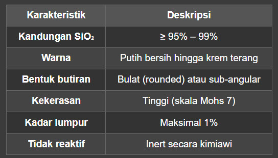
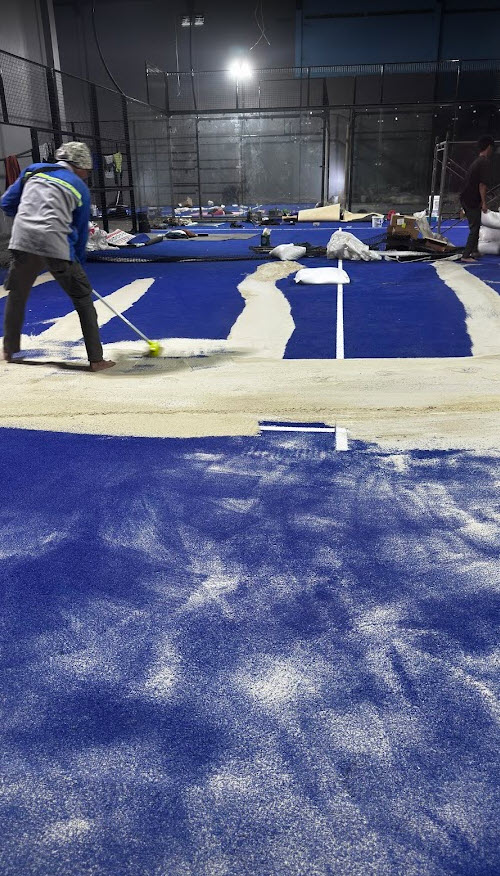
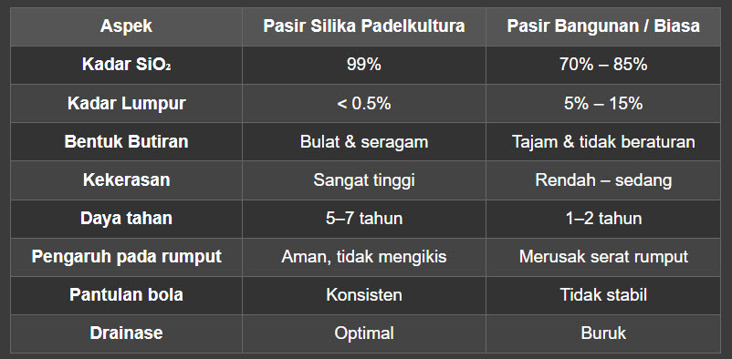

📌 Pendahuluan: Fenomena Padel di Indonesia
Olahraga padel perpaduan antara tenis dan squash sedang mengalami ledakan popularitas di Indonesia. Dari Jakarta hingga Malang, lapangan padel bermunculan seperti jamur di musim hujan. Klub-klub eksklusif, pusat kebugaran, hingga hotel berbintang berlomba-lomba membangun lapangan padel untuk memenuhi antusiasme masyarakat.
Namun, di balik gemerlapnya olahraga yang satu ini, ada satu elemen krusial yang sering luput dari perhatian: pasir silika. Ya, pasir yang Anda injak saat bermain padel bukanlah pasir sembarangan. Bukan pasir pantai, bukan pula pasir bangunan. Pasir yang digunakan di lapangan padel adalah pasir silika berkualitas tinggi dengan spesifikasi teknis yang sangat ketat.
Lantas, apa sebenarnya pasir silika itu? Mengapa ia begitu penting untuk lapangan padel? Dan di mana Anda bisa mendapatkan pasir silika premium yang sesuai standar internasional? Simak ulasan lengkapnya di bawah ini.
🔬 Apa Itu Pasir Silika?
Pasir silika (silica sand) adalah jenis pasir yang memiliki kandungan utama silikon dioksida (SiO₂) dalam kadar tinggi, biasanya di atas 95%. Berbeda dengan pasir biasa yang banyak mengandung lumpur, tanah liat, dan kotoran organik, pasir silika memiliki struktur butiran yang seragam, keras, dan tidak mudah hancur.
Karakteristik utama pasir silika meliputi:

Karena sifatnya yang keras, stabil, dan bersih, pasir silika menjadi material andalan di berbagai industri — mulai dari filtrasi air, sandblasting, hingga lapangan olahraga seperti padel.
🎾 Kenapa Lapangan Padel Harus Pakai Pasir Silika?
Lapangan padel memiliki permukaan yang dilapisi rumput sintetis (artificial turf) . Nah, di atas rumput sintetis inilah pasir silika ditebarkan. Fungsinya bukan sekadar hiasan, melainkan sangat vital:
1. Menstabilkan Rumput Sintetis
Pasir silika berfungsi sebagai ballast atau pemberat yang membuat serat rumput sintetis tetap berdiri tegak. Tanpa pasir, rumput sintetis akan mudah roboh, lecek, dan tidak nyaman diinjak.
2. Mengontrol Pantulan Bola
Dalam olahraga padel, pantulan bola sangat menentukan kualitas permainan. Pasir silika dengan ukuran butiran yang tepat membantu menciptakan pantulan bola yang konsisten dan presisi. Terlalu sedikit pasir, bola akan memantul terlalu tinggi. Terlalu banyak, bola akan "mati" dan tidak memantul optimal.
3. Mencegah Cedera Pemain
Pasir silika memberikan cushioning (bantalan) alami yang mengurangi dampak benturan saat pemain berlari, melompat, atau jatuh. Ini sangat penting untuk melindungi sendi lutut, pergelangan kaki, dan punggung pemain.
4. Drainase Air yang Optimal
Sifat pasir silika yang porous (berpori) memungkinkan air hujan cepat meresap ke bawah. Lapangan padel tidak akan becek atau tergenang, sehingga bisa digunakan segera setelah hujan reda.
5. Mengurangi Debu dan Kotoran
Pasir silika premium yang bersih tidak menghasilkan debu berlebih. Ini menjaga lapangan tetap higienis dan nyaman, terutama untuk olahraga indoor.
⚙️ Spesifikasi Pasir Silika untuk Lapangan Padel
Tidak semua pasir silika cocok untuk lapangan padel. Berdasarkan standar internasional dan rekomendasi dari federasi padel dunia, berikut spesifikasi ideal pasir silika untuk lapangan padel:
✅ Ukuran Mesh (Butiran)
- Mesh 16–30 (0.6 mm – 1.18 mm): Paling umum digunakan untuk lapangan padel.
- Mesh 20–40 (0.4 mm – 0.85 mm): Alternatif untuk permukaan yang lebih halus.
- Mesh 30–50 (0.3 mm – 0.6 mm): Untuk lapangan dengan rumput sintetis berbulu pendek.
✅ Kadar SiO₂
Minimal 95%, idealnya 98% ke atas. Semakin tinggi kadar SiO₂, semakin keras dan tahan lama pasir tersebut.
✅ Kadar Lumpur & Kotoran
Maksimal 1%. Pasir yang kotor akan menyumbat pori-pori rumput sintetis dan merusak drainase.
✅ Bentuk Butiran
Bulat (rounded) lebih disukai karena tidak melukai serat rumput sintetis dan memberikan distribusi yang merata.
✅ Kadar Air (Moisture Content)
Maksimal 3%. Pasir yang terlalu basah akan menggumpal dan sulit ditebarkan secara merata.
🚫 Bahaya Pakai Pasir Sembarangan di Lapangan Padel
Banyak pemilik lapangan padel yang tergiur menggunakan pasir murah — seperti pasir bangunan atau pasir pantai — demi menghemat biaya. Padahal, ini adalah kesalahan fatal yang bisa berakibat:
- Rumput sintetis cepat rusak karena butiran pasir yang tajam mengikis serat.
- Pantulan bola tidak konsisten, mengganggu kualitas permainan.
- Cedera pemain karena pasir tidak memberikan bantalan yang memadai.
- Lapangan cepat kotor dan berdebu, mengurangi kenyamanan.
- Drainase buruk, menyebabkan genangan air setelah hujan.
Seperti yang diulas dalam artikel "Bukan Pasir Pantai, Inilah Jenis Pasir yang Digunakan di Lapangan Padel" (MSN, 2025), pasir pantai mengandung garam dan kotoran organik yang justru merusak rumput sintetis dalam jangka panjang.
🏆 Padelkultura: Solusi Pasir Silika Premium untuk Lapangan Padel
Di tengah maraknya kebutuhan pasir silika untuk lapangan padel di Indonesia, Padelkultura hadir sebagai solusi terpercaya. Kami menyediakan pasir silika premium yang telah melalui proses seleksi ketat dan pengujian laboratorium untuk memastikan kualitas terbaik.
✨ Mengapa Memilih Pasir Silika dari Padelkultura?

1. Kadar SiO₂ 99% – Super Premium
Pasir silika kami memiliki kandungan silikon dioksida hingga 99% , menjadikannya salah satu yang terbaik di kelasnya. Ini memastikan kekerasan maksimal dan ketahanan jangka panjang.
2. Ukuran Mesh Tepat untuk Padel
Kami menyediakan berbagai ukuran mesh yang disesuaikan dengan jenis rumput sintetis lapangan padel Anda:
- Mesh 16–30 untuk rumput sintetis standar
- Mesh 20–40 untuk permukaan yang lebih halus
- Mesh 30–50 untuk rumput sintetis berbulu pendek
3. Bebas Lumpur & Kotoran
Pasir silika kami telah melalui proses washing (pencucian) dan drying (pengeringan) bertingkat, sehingga kadar lumpur dan kotoran di bawah 0.5% — jauh di bawah standar industri.
4. Butiran Bulat & Seragam
Proses screening modern memastikan butiran pasir berbentuk rounded dan seragam, sehingga tidak merusak serat rumput sintetis dan memberikan distribusi yang merata.
5. Kadar Air Rendah
Dengan kadar air maksimal 2% , pasir silika Padelkultura siap pakai dan tidak menggumpal saat ditebarkan.
6. Pengiriman ke Seluruh Indonesia
Kami melayani pengiriman ke berbagai kota di Indonesia, termasuk Jakarta, Bandung, Surabaya, Malang, Bali, Medan, Makassar, dan lainnya.
7. Harga Kompetitif
Meskipun kualitas premium, kami menawarkan harga yang kompetitif dan transparan. Tidak ada biaya tersembunyi.
📊 Perbandingan Pasir Silika Padelkultura vs Pasir Biasa

🛠️ Cara Aplikasi Pasir Silika di Lapangan Padel
Padelkultura tidak hanya menjual pasir, tetapi juga memberikan panduan aplikasi yang tepat agar hasilnya maksimal:
Langkah 1: Persiapan
Pastikan rumput sintetis sudah terpasang dengan benar dan permukaan lapangan rata.
Langkah 2: Penebaran Awal
Gunakan spreader (alat penebar) untuk menyebarkan pasir silika secara merata. Takaran standar: 15–20 kg per meter persegi.
Langkah 3: Penyapuan
Sapu pasir menggunakan sapu karet (rubber broom) atau power brush khusus agar pasir masuk ke sela-sela serat rumput.
Langkah 4: Perataan
Gunakan drag mat atau alat perata untuk memastikan distribusi pasir merata ke seluruh permukaan lapangan.
Langkah 5: Finishing
Siram lapangan dengan air secukupnya untuk membantu pasir mengendap di dasar rumput sintetis.
Langkah 6: Maintenance Rutin
Lakukan top-up pasir silika setiap 6–12 bulan sekali, tergantung intensitas pemakaian lapangan.
💡 Tips Memilih Pasir Silika untuk Lapangan Padel
Agar tidak salah pilih, berikut tips dari tim ahli Padelkultura:
1. Cek Sertifikat Analisa (COA) — Pastikan pemasok menyertakan Certificate of Analysis yang menunjukkan kadar SiO₂, mesh size, dan kadar lumpur.
2. Minta Sample — Jangan ragu meminta sampel pasir sebelum membeli dalam jumlah besar.
3. Perhatikan Warna — Pasir silika premium berwarna putih bersih hingga krem terang. Hindari pasir yang kehitaman atau kecoklatan.
4. Tanya Ukuran Mesh — Sesuaikan dengan jenis rumput sintetis lapangan Anda.
5. Bandingkan Harga per Kualitas — Jangan tergiur harga murah, karena kualitas rendah justru lebih mahal dalam jangka panjang (rumput cepat rusak, perlu ganti lebih sering).
📞 Hubungi Padelkultura Sekarang!
Apakah Anda sedang membangun lapangan padel baru atau ingin merenovasi lapangan yang sudah ada? Padelkultura siap menjadi mitra terpercaya Anda dalam menyediakan pasir silika premium untuk lapangan padel.
✅ Keunggulan Padelkultura:
- Pasir silika SiO₂ 99% (super premium)
- Ukuran mesh lengkap & customizable
- Bebas lumpur & kotoran
- Pengiriman cepat ke seluruh Indonesia
- Harga kompetitif dengan kualitas terbaik
- Konsultasi gratis dengan tim ahli
📱 Hubungi Kami:
- WhatsApp: 081217481860
- Email: padelnesia@gmail.com
- Website: www.padelkultura.id
- Instagram: @padel_kultura
📝 Kesimpulan
Pasir silika bukanlah sekadar "pasir biasa" yang bisa diambil dari toko material bangunan terdekat. Ia adalah komponen vital yang menentukan kualitas, keamanan, dan kenyamanan lapangan padel Anda. Dari stabilitas rumput sintetis, konsistensi pantulan bola, hingga perlindungan terhadap cedera pemain semuanya bergantung pada kualitas pasir silika yang digunakan.
Padelkultura hadir sebagai solusi terpercaya dengan menyediakan pasir silika premium yang memenuhi standar internasional untuk lapangan padel. Dengan kadar SiO₂ hingga 99%, butiran bulat dan seragam, serta bebas kotoran, pasir silika Padelkultura adalah investasi terbaik untuk lapangan padel Anda.
Jangan kompromi dengan kualitas. Pilih Padelkultura mitra terbaik untuk lapangan padel premium Anda!